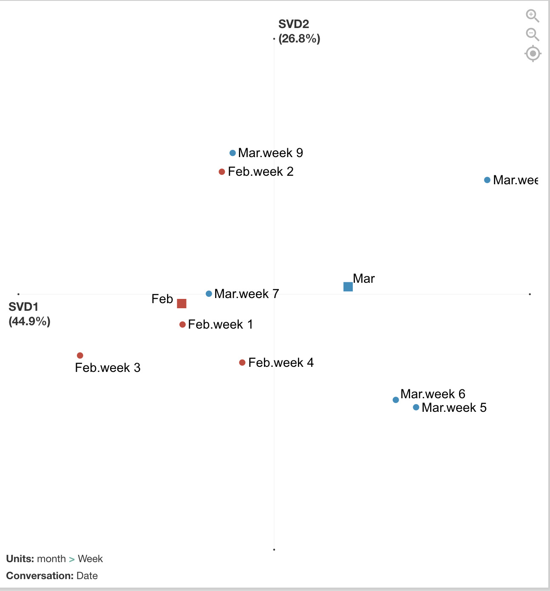

Worked Example by Golnaz Arastoopour Irgens
Dataset6: News media and government/international organization tweets (by Jingyuan Yu)
I used a subset of the dataset with U.S. CDC tweets from Feb and March 2020 and coded tweets for 6 different codes:
| Code | Definition | Sample keywords |
|---|---|---|
| People | Referring to different populations of people affected by covid-19 | People, family, community, children, adults |
| Positive Action | Referring to an action that people can take to cope with or stay safe from covid-19 | Support, wash, avoid, learn, help |
| Spread | Referring to the spread of the virus among people | Spread, outbreak |
| Alarm | Using language that conveys an emergency, risk, or sense of alarm | Emergency, risk, death, complication, burden |
| Global | Referring to other countries or global effects of covid-19 beyond the U.S. | China, travel, global |
| Experts | Referring to experts or professionals related to epidemiology | Doctors, experts, cdc, recommend |
I used ENA to visualize themes in the CDC’s tweets and created a Month, Week, and Date variable. Stanzas (segmentations for how co-occurrences are counted) were by date. Units (individual networks) were accumulated by week and then grouped into red and blue networks by month.
The figure below compares the average networks for each month and shows the average centroids. Although the differences are not significant and the effect is not very large, there are differences between February and March in terms of how the CDC tweets were conveying information to the public. In February, tweets focused more on how people could follow expert recommendations regarding the global effects of COVID-19. In March, tweets focused more on the alarming and quick spread of the virus and what positive actions people could take to cope with and reduce spread of COVID-19.

Below are two examples of February and March tweets that match with the interpretation of the networks above.
| Example of Feb 21 (week 3) Tweet | There are now 2 categories of #COVID19 cases in the US: 1) Cases detected through the domestic public health systems, and 2) cases among people who were repatriated via @StateDept flights from Wuhan (China) & from the Diamond Princess cruise ship (Japan). https://t.co/1ifchVQ9jm. |
| Example of March 17 (week 7) Tweet | Older adults appear to be twice as likely to have serious #COVID19 illness. Take everyday precautions to reduce your risk of exposure: Avoid close contact with people who are sick Wash your hands often Avoid touching your face, nose, & eyes https://t.co/K8q30LYLiE https://t.co/csEUNDYaNf |
The figure below breaks out the networks by each week and is a centroid representation. February includes weeks 1 - 4 and March includes weeks 5 - 9. This visualization shows more detailed trajectories on how the CDC tweets’ focus changed week by week. For example, in week 9 at the end of March, those tweets look more similar to the February tweets that had a global/travel focus. This was because many additional travel advisories went into effect during this week by the U.S. government.

Additional possible analyses include exploring metadata from this dataset such as retweets, favorited/popular tweets, or media included in tweets. Also, April tweets were not included in this analysis and are now available for download and could be added. In addition, this tweet data could be correlated with metadata from other sources such as general tweets with #Covid19 hashtag, containment and mitigation measures, number of infections, etc.
All csv files and R scripts can be accessed here.
Worked Example by Kamila Misiejuk
Worked example by Kamila Misiejuk with Dataset3: English news articles that mention "corona virus" or "coronavirus" or
"covid"*
*IMPORTANT: After working for a while with this dataset, I noticed that the variable Country and the url do not always match. I proceeded with the analysis using the Country variable, but would recommend to try other methods.*
Due to the size of the dataset and the limited computation power, I decided to focus on the titles of English news articles between 2019-12-19 and 2020-02-01 published in Europe. This worked example tries to answer the question: How did the news discourse change in Europe before and after the first COVID case in Europe?
To answer this question, I visualized the discourse network for all countries using the ENA webtool. Also, I produced networks for two countries, Italy and Germany. I chose Italy due to their later big COVID outbreak that started in the middle of March 2020. Germany did not have a comparable COVID outbreak as in Italy.
The original dataset includes 93,360 English news articles. As part of data-preprocessing:
- The articles were grouped by continent using the country variable available in the dataset, and subsetted by Europe.
- The articles were split into two datasets: before and after 25th of January, when the 1st case of COVID in Europe was confirmed. The before dataset includes 4,678 articles, and the after dataset 9,157 articles.
To determine the Codes, I conducted LDA topic modeling on all news article titles and screened through the article titles manually. This inspired the following coding scheme:
| Code | Definition | Sample keywords |
|---|---|---|
| Economy | Economical issues connected to COVID | Market, Stock, Impact, Oil |
| Travel | Traveling issues that arises with COVID outbreak | Flight, Travel, Airport, Airline |
| Spread | Global spreading of COVID, rise of the disease | Hit, Rise, Spread, World, Outbreak, Global, Rise |
| Death toll | Mortality rate from COVID | Deadly, Toll, Death |
| Infection | COVID infection risks and testing, and the infection process | Patient, Risk, Infect, Test, Hospital, Pneumonia |
| Reporting | Reporting on or confirmation of COVID cases / outbreaks | Confirm, Report, Official |
| Previous diseases | Connecting COVID to previous diseases and its unknown nature | SARS, MARS, Mystery |
| Fear | Fearful/concerned emotional response to COVID | Fear, Concern |
| Intervention | Intervention measures in response to COVID | Quarantine, Evacuate, Emergency, Close |
Before conducting ENA analyses in the ENA webtool, I converted the CSV file into Excel files.
ANALYSIS (differences among European countries before and after the first COVID case in EU)
Units: FirstEU > Country
Conversation: Published date (Stanza: Whole conversation)
Scale for Edge Weights: 1.4
Minimum Edge Weight: 0,3
The ENA network for all European countries shows a significant difference on the x axis in the discourse between the detection of the first COVID case in Europe. The earlier discourse focused more on the connection between the spread of the disease, the infection risk, reporting and previous diseases, such as MARS and SARS. After the 25th of January, the focus moved towards the infection risk and interventions, as well as COVID reporting and interventions. Fear seems to appear more in the later discourse and is connected to interventions.
| Germany network (blue: before | red: after) | Italy network (blue: before | red: after) |
|---|---|
When we take a look at Germany’s network before the COVID outbreak, there is a strong focus on previous diseases, their death toll, reporting, infection risks and spread. The first COVID case in France changed the discourse towards interventions that are connected to COVID infection risk, spread of the virus, travel, and the death toll. Fear seems to be stronger in the later discourse, and is connected to intervention and economy.
In comparison, in Italy's network both the COVID spread and infection risk are strongly connected to travel and economy. After the first European COVID case, the connections in the network are stronger between COVID spread, reporting and interventions. In the after network, fear is connected to reporting, infection risk, and COVID spread. Interestingly, connections between previous diseases, COVID spread and death toll are stronger in the discourse after the 25th of January.
| Before network (orange: Italy | blue: Germany) | After network (red: Germany | green: Italy) |
|---|---|
The obvious limitation of Dataset3 is that the collected articles are only in English, which might not reflect the sentiments expressed in other languages.
At the same time, there are many promising analysis directions possible with this dataset, e.g.:
- An exploration of differences in the news discourse over a longer time period, which can be combined with COVID-related mitigations
- A focused analysis of certain countries / regions - e.g., countries with high mortality rate and its influence on the changes in discourse in neighboring countries / regions
- It would be interesting to perform an analysis with a more sophisticated coding of the kinds of news presented, e.g., expert opinion, warning, statistics, recommendations.
All csv files and R scripts can be accessed here.